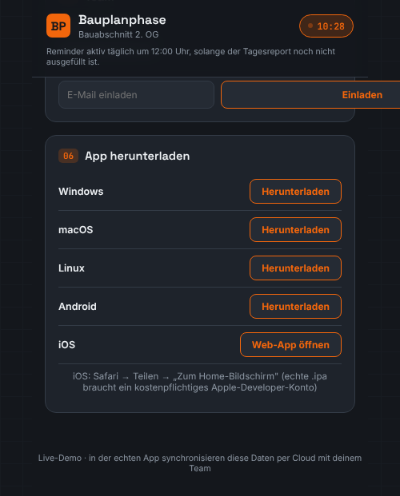

BaustelleTagesreport-Windows-Setup.exe per Doppelklick ausfuehren.BaustelleTagesreport-macOS.dmg oeffnen.BaustelleTagesreport-Linux.AppImage ausfuehrbar machen: Rechtsklick → Eigenschaften → "Ausfuehrung erlauben", oder im Terminal chmod +x BaustelleTagesreport-Linux.AppImage.BaustelleTagesreport-Android.apk antippen, um die Installation zu starten.Alternative zum Download-Button für Nutzer, die lieber per Skript installieren. Jedes Snippet laedt die Datei direkt herunter - kein Login, keine Zwischenabfrage noetig.
$url = "https://github.com/ThanosXXL/Thanos/releases/download/tagesreport-v1.0.1/BaustelleTagesreport-Windows-Setup.exe" Invoke-WebRequest -Uri $url -OutFile "BaustelleTagesreport-Setup.exe" Start-Process "BaustelleTagesreport-Setup.exe"
$url = "https://github.com/ThanosXXL/Thanos/releases/download/tagesreport-v1.0.1/BaustelleTagesreport-macOS.dmg" Invoke-WebRequest -Uri $url -OutFile "BaustelleTagesreport.dmg" open "BaustelleTagesreport.dmg"
Laeuft mit PowerShell (pwsh), das auch auf macOS installierbar ist; open ist der macOS-Befehl zum Oeffnen der Datei.
$url = "https://github.com/ThanosXXL/Thanos/releases/download/tagesreport-v1.0.1/BaustelleTagesreport-Android.apk" Invoke-WebRequest -Uri $url -OutFile "BaustelleTagesreport.apk"
Datei anschliessend per USB/Cloud aufs Android-Geraet uebertragen und antippen.